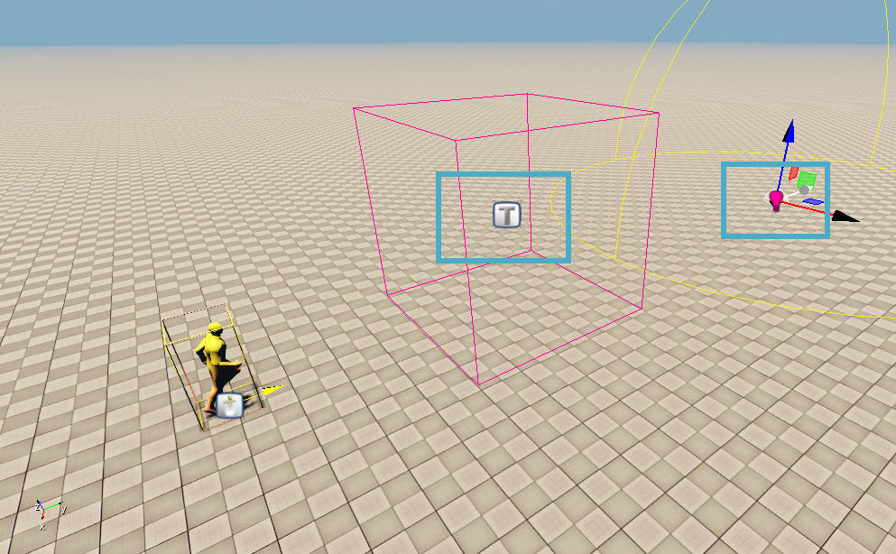
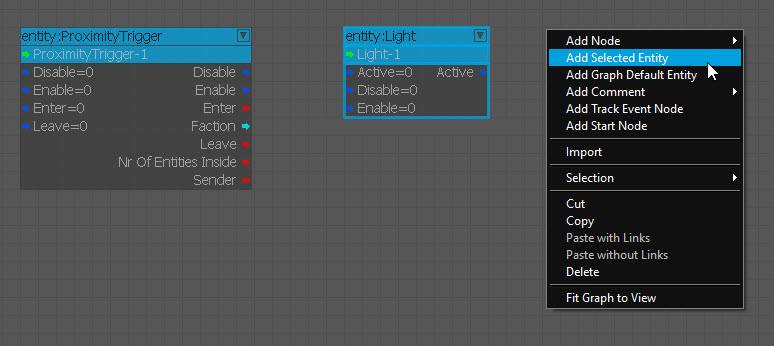
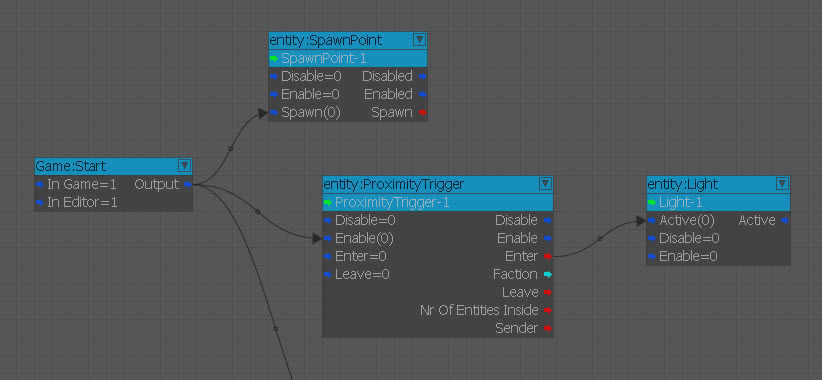
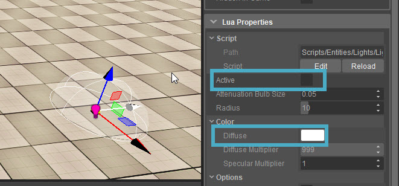
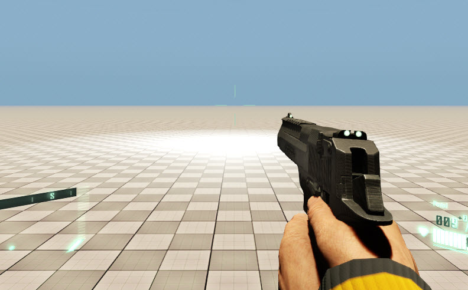

We already explored the idea of using Flow Graph to spawn a player into the scene. We will now look at connecting two entities together to trigger a light to be turned on or off depending on whether the player is located within the bounds of an entity or not. For this we will be using a Proximity Trigger and then also we will be using a traditional light entity to be able to turn it on or off.
Triggering Events Within our Scene
Follow the steps below to connect two entities together and trigger an event in the level:
In front of the Spawnpoint you added earlier, add a Proximity Trigger and a Light Entity from Create Object -> Legacy Entities by searching for them and dragging them into the scene.
Take care in placing the Proximity Trigger and how it relates to the Spawnpoint of the player that we positioned earlier.- Navigate to our initial flowQuickStart graph and add the two new entities into the graph to begin connecting them. We want the Proximity Trigger to be turned on when the game starts, so we'll connect the Output of the Game:Start node to the Enable input of the ProximityTrigger node. Then as we enter the Proximity Trigger, we want the light to switch on, so we connect the Enter output of the ProximityTrigger to the Activate input of the Light.
- Because we only want to activate the light when we enter the Proximity Trigger, it has to be deactivated first. We can do this in its Properties by disabling the Active checkbox. To make it more noticable, we'll change the Diffuse Multiplier to 999 to make it extremely bright. Since the pivot of the light is right in the middle, lift it above the ground to create more light when it's on. (of course to check how this looks, Activate it again when you move it upward. Don't forget to then deactivate it again when it's in the right position.)
- Jump into the game (Ctrl+G) and walk forward to activate the Light Entity whenever your have entered into the Proximity Trigger volume.
Step 1

Step 2

Step 3

Step 4

Step 5
